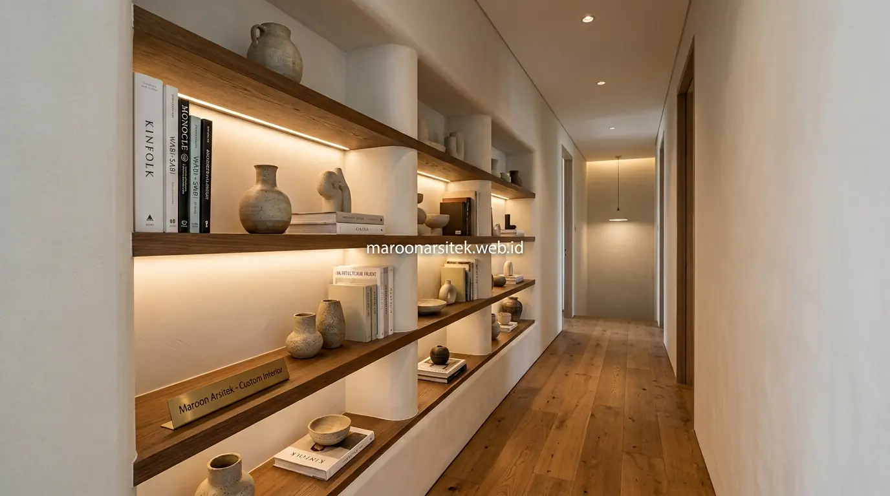

Selain wardrobe dan kitchen set, jasa desain interior custom juga mencakup meja kerja tersembunyi, rak dinding yang menyatu dengan struktur ruang, dan storage kamar mandi yang dirancang khusus untuk area dengan keterbatasan luas. Maroon Arsitek melengkapi solusi penyimpanan rapi dengan ketiga elemen tambahan ini untuk memaksimalkan fungsi setiap sudut rumah Anda.
Selain kebutuhan penyimpanan pakaian dan peralatan dapur, banyak rumah dengan ruang terbatas juga membutuhkan solusi untuk area kerja, penyimpanan buku, dan kamar mandi yang sering kali menjadi titik lemah dalam pemanfaatan ruang. Bagian berikut menguraikan tiga solusi tambahan yang menjawab kebutuhan tersebut.
Meja Kerja atau Rias Tersembunyi dalam Unit Custom
Meja kerja atau rias tersembunyi dirancang menyatu dengan unit lemari atau rak, dapat dilipat atau ditarik keluar saat dibutuhkan dan disembunyikan kembali saat tidak digunakan, menghemat ruang pada area yang tidak memiliki kamar kerja terpisah. Solusi ini efektif untuk rumah dengan kebutuhan area kerja namun ruang yang tersedia sangat terbatas.
Mekanisme penarikan dirancang menggunakan rel yang kokoh, memastikan meja dapat menahan beban laptop dan peralatan kerja lainnya tanpa risiko goyang atau tidak stabil saat digunakan dalam posisi tertarik keluar.
Integrasi dengan unit penyimpanan di sekitarnya memungkinkan peralatan kerja seperti alat tulis dan dokumen tetap tersimpan rapi, langsung dapat diakses saat meja ditarik keluar tanpa perlu mencari peralatan dari tempat terpisah.
Integrasi Pencahayaan Task Lighting pada Unit Meja Tersembunyi
Kebutuhan pencahayaan yang memadai saat bekerja dijawab melalui integrasi task lighting pada unit meja tersembunyi, memastikan area kerja mendapat pencahayaan optimal begitu meja ditarik keluar dari posisi tersimpannya.
Integrasi ini menghindarkan kebutuhan akan lampu meja terpisah yang memakan ruang tambahan, sekaligus memastikan fungsi meja kerja benar-benar optimal meski berada dalam unit furnitur yang dirancang serba ringkas.
Rak Pajangan dan Buku yang Menyatu dengan Dinding
Rak pajangan dan buku custom dirancang menyatu dengan struktur dinding, memanfaatkan kedalaman minimal namun tetap memberikan kapasitas penyimpanan yang memadai tanpa membuat ruang terasa sempit akibat furnitur yang menjorok terlalu jauh ke dalam ruangan. Pendekatan ini cocok untuk koridor atau ruang sempit yang tetap ingin memiliki area pajangan.
Kedalaman rak disesuaikan dengan jenis barang yang akan dipajang atau disimpan, memastikan proporsi yang tepat antara kapasitas penyimpanan dan ruang gerak yang tetap tersisa pada area di sekitar rak tersebut.
Pencahayaan tambahan pada rak pajangan turut dipertimbangkan, membantu menonjolkan barang yang dipajang sekaligus memberikan elemen dekoratif tambahan pada dinding yang sebelumnya mungkin kosong tanpa fungsi.

Penyesuaian Kedalaman Rak untuk Ruang Sempit
Kebutuhan penyimpanan tanpa mengurangi ruang gerak dijawab melalui penyesuaian kedalaman rak yang minimal namun tetap fungsional, memastikan rak dapat menampung barang yang dibutuhkan tanpa menjorok berlebihan ke area yang digunakan untuk lalu lintas penghuni.
Penyesuaian ini penting terutama pada koridor atau area sempit lainnya, di mana setiap sentimeter ruang gerak yang tersisa sangat berharga untuk menjaga kenyamanan mobilitas penghuni rumah sehari-hari.
Storage Custom untuk Kamar Mandi dengan Ruang Terbatas
Storage custom untuk kamar mandi memanfaatkan area vertikal dan sudut yang sering terbuang, seperti ruang di atas toilet atau sudut dekat wastafel, untuk menyimpan perlengkapan mandi tanpa mengurangi ruang gerak pada kamar mandi berukuran kecil. Solusi ini menjawab kebutuhan penyimpanan yang sering terabaikan pada area kamar mandi terbatas.
Material yang digunakan disesuaikan dengan kondisi lembap kamar mandi, memastikan daya tahan furnitur tetap terjaga meski berada di lingkungan dengan tingkat kelembapan tinggi dan paparan air secara rutin.
Desain storage mempertimbangkan aksesibilitas penggunaan sehari-hari, menempatkan perlengkapan yang sering digunakan pada area yang mudah dijangkau tanpa harus membungkuk atau meraih dengan susah payah setiap kali dibutuhkan.
Pemilihan Material Tahan Lembap untuk Storage Kamar Mandi
Kebutuhan daya tahan pada lingkungan lembap dijawab melalui pemilihan material khusus yang tahan terhadap kelembapan tinggi, mencegah kerusakan dini seperti pembengkakan atau jamur yang umum terjadi pada material yang tidak sesuai untuk area kamar mandi.
Pemilihan material yang tepat ini memastikan storage kamar mandi custom tetap awet dan fungsional dalam jangka panjang, meski beroperasi dalam kondisi lingkungan yang lebih menantang dibanding furnitur pada ruang lain di rumah.